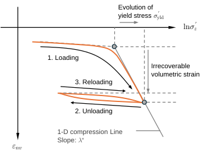
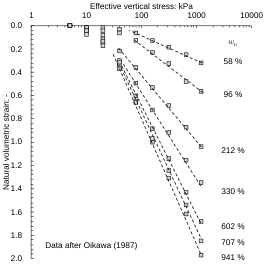
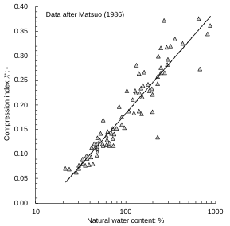
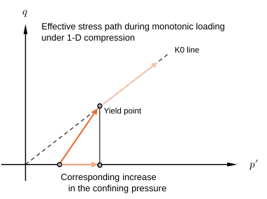

Ch3.2.1
Compressibility
Soil hardens due to consolidation (i.e., volumetric hardening). This hardening is conventionally represented by the evolution of yield stress (See Chapter 3.2.3), which separates the regions with and without consolidation history, referred to as the normally consolidated (NC) and overconsolidated (OC) state, respectively. In what follows, the parameters governing the elasto-plastic compression behaviour of soil are introduced.

A typical effective stress-volumetric strain relationship obtained from oedometer tests is schematically illustrated in Fig. 3.2.1. During the first loading stage, a distinct yield stress $\sigma'_{yld}$ is identified, followed by a log-linear portion known as the 1-D compression line, characterised by the oedometric compression index defined as:
Although the above is the most practical representation, it is convenient to employ the natural logarithm and reasonable to adopt the natural strain for describing large deformation of peats (Butterfield, 1979; Oikawa, 1987):
They are interrelated as:
Hereafter, the mechanical indices are expressed in both the void-ratio-based and natural strain-based forms, with their interrelationship explicitly given. Note that the natural-strain-based form is primarily employed in the formulations developed in the present study.
The Unloading–Reloading Loop (URL) following the first loading, in which the compressibility is smaller than that in the NC state, represents a largely recoverable process and is characterised by the oedometric swelling index defined as:
The plastic compression is thus represented by the difference $\lambda^*_{oed}-\kappa^*_{oed}$, leading to the following expression for the evolution of yield stress:
Here, $\sigma'_{yld0}$ is the initial yield stress. The plastic volumetric strain $\varepsilon^p_{nv}$ serves as the hardening parameter to memorise the past stress history.
Meanwhile, compression under isotropic stress application similarly follows a single line, which is parallel to the 1-D compression line, referred to as isotropic compression line. The corresponding isotropic compression index is defined as:
It is well established, both experimentally and theoretically, that
Accordingly, the notation $\lambda^*_{oed}$ is not used hereafter. Previous studies (e.g., Oikawa, 1986) show that the compression index for peats is strongly dependent on the natural water content (Fig. 3.2.2). Matsuo (1987) found the following correlation between them (Fig. 3.2.3):


However, the isotropic swelling index, defined in Eq. (3.1.22) of Chapter 3.1.2, is not identical to the oedometric swelling index. This difference arises because, under one-dimensional compression, the effective stress path is more elongated than the corresponding increment in the mean effective principal stress (Fig. 3.2.4). The relationship between the two indices can be formulated as follows:
Here, $K_{0,OC}$ varies depending on the stress state. The change in $K_{0,OC}$ and the stress change ratio $\partial\sigma'_z/\partial p'$ can be determined via the constitutive relationship, or Eq. (3.1.7) of Chapter 3.1.1, by assuming the perfect lateral constraint (i.e., $\delta\varepsilon^e_r=0$):
Substituting Eqs. (3.2.15) and (3.2.16) into Eq. (3.2.14) yields:
With the typical values of $(K_{0,NC},\alpha,\nu_{vh})$ for peats, presented in Table 3.1.1 and Fig. 3.1.4 (a),
This indicates the scaling remains reasonably constant within the practical range of OCR (< 4). With this scaling in mind, the simpler oedometer test can substitute for the isotropic compression tests in characterisation for compressibility. Note that, in typical modelling approaches, the isotropic index $\kappa^*$ is treated as a material constant which defines the stiffness scale together with $p'$ as discussed in Chapter 3.1.2. The oedometric index $\kappa^*_{oed}$ is therefore the dependent variable.
